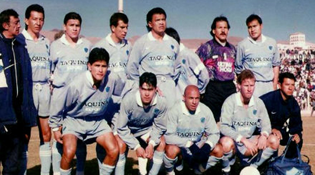

1960 A 2014
 En 1967 Bolívar participó por primera vez en la Copa Libertadores de América. Fue el comienzo de una brillante historia de los académicos
celestes y de la más completa participación de un equipo boliviano.
Participó 26 veces en la Copa Libertadores de América, seguido por The Strongest. Sus mejores participaciones las hizo en
1986, 1994, 1997, 1998, 2000 y 2014, llegando a semifinales y/o la tercera fase de la competencia. Es el octavo equipo con mayor número de puntos
en toda la historia de la competición de entre casi doscientos elencos que han participado en ella desde 1960.
En 1967 Bolívar participó por primera vez en la Copa Libertadores de América. Fue el comienzo de una brillante historia de los académicos
celestes y de la más completa participación de un equipo boliviano.
Participó 26 veces en la Copa Libertadores de América, seguido por The Strongest. Sus mejores participaciones las hizo en
1986, 1994, 1997, 1998, 2000 y 2014, llegando a semifinales y/o la tercera fase de la competencia. Es el octavo equipo con mayor número de puntos
en toda la historia de la competición de entre casi doscientos elencos que han participado en ella desde 1960.
1967 A 2004
 El debut copero de los celestes en 1967. Terminó en el cuarto lugar entre seis equipos. El primer encuentro internacional en esa copa lo jugó el 19 de marzo de 1967 en La Paz frente a River Plate con un empate a 3 goles. El 10 de mayo de 1967 obtuvo su primer triunfo como visitante en Bogotá frente al Independiente Santa Fe por 2 a 1. Su segunda participación fue épica. Empató el segundo lugar con Olimpia y disputó el desempate en Buenos Aires. Perdió por un estrecho 2 a 1. La clasificación quedó en deseo, pero los celestes mostraron su calidad y la talla del cuadro. Participó también en 1996 en la Copa Conmebol y a partir de 2002 y 2004 en la Copa Sudamericana, la que más satisfacciones le dio.